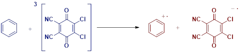
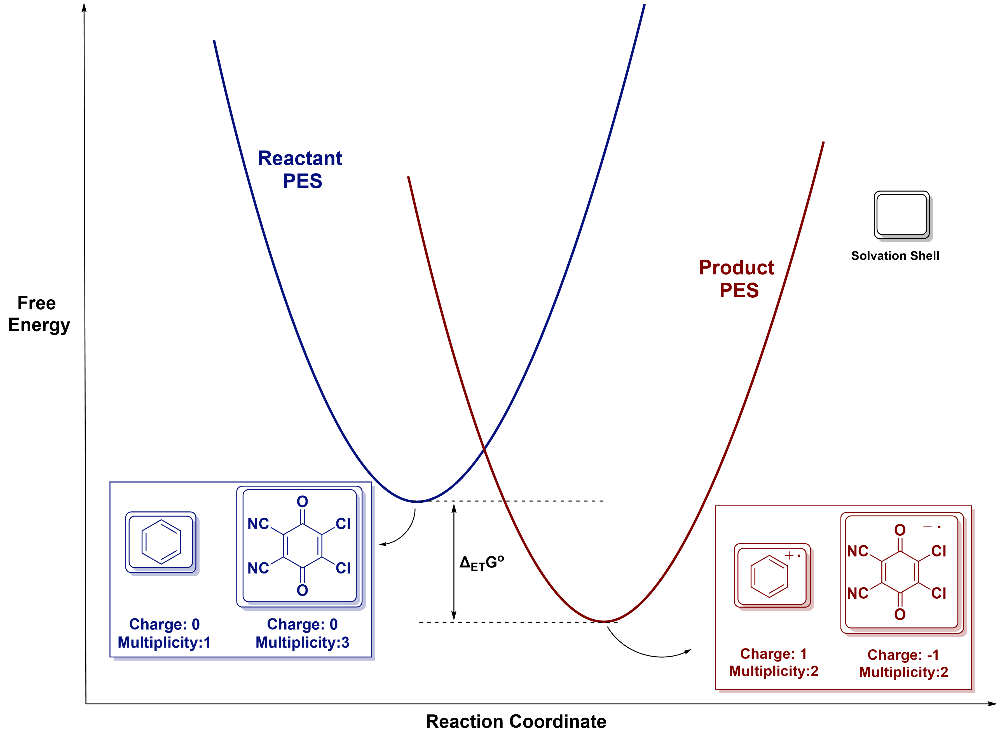
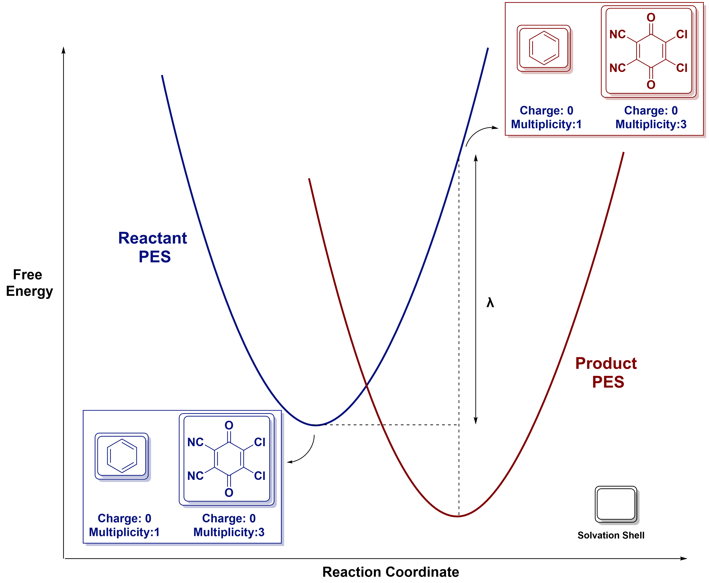
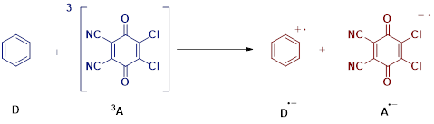

Calculating Electron-Transfer Barriers Using the Marcus–Hush Model
1. Introduction
Here we describe the workflow for computing thermal activation barriers for outer-sphere electron transfer (ET) processes using the Marcus–Hush model. The procedure outlines how to obtain the free energy difference (ΔG°) and reorganization energy (λ) from density functional theory (DFT) calculations, including the use of non-equilibrium solvation to calculate the solvent contributions.
2. Terminologies and Definitions
ΔG° (Free Energy Difference) Gibbs free energy difference between reactant (pre-SET) and product (post-SET) states.
λ (Reorganization Energy) Sum of the energetic penalties associated with reorganizing:
λᵢ : Internal geometry change
λₒ : Solvent/environmental response
Activation Barrier (Marcus)
ΔG‡ = ( (λ + ΔG°)² ) / (4λ)
Non-Equilibrium Solvation
A solvation model in which the solvent polarization from one electronic state is
used to evaluate the energy of another state (using NonEq=Save / NonEq=Read).
3. Brief Theory
Consider the example electron transfer (ET) between a triplet quinone derivative (acceptor) and benzene (donor).

The ΔG° (free energy difference) between the reactant (before ET) and product (after ET) states is the Gibbs free energy difference between the optimized "bottom of the well" geometries of the structures.

The reorganization energy (λ) can be visualized as the energy penalty to take the reactant structures from their optimal geometry and solvation shell to the geometry and solvation shell of the product, while maintaining their initial electronic configuration.

4. Procedure
The Marcus–Hush calculation consists of three major steps:
Compute ΔG° from optimized reactant and product states.
Compute λ using four single-point calculations (Nelsen's four-point method).
Calculate ΔG‡ using the Marcus equation.
Step 1: Compute Free Energy Difference (ΔG°)
Optimize the geometries of the reactant and product states separately.
Extract the Gibbs free energies from each calculation.
Compute:
ΔG° = G_product − G_reactant
Step 2: Compute Reorganization Energy (λ)
Reorganization energy is calculated using four single-point calculations: two on reactant surfaces and two on product surfaces under non-equilibrium solvation.
Required Calculations
Reactant-State Energies
E₁: Donor (D) at its own optimized geometry and solvation Charge/spin = reactant state Save solvation environment using
NonEq=SaveE₂: Acceptor (A) at its own optimized geometry and solvation Charge/spin = reactant state Save solvation environment using
NonEq=Save
Product-State Energies Using Reactant Electronic Configuration
E₃: Donor (D) at the product-optimized geometry Use reactant charge/multiplicity Read product solvation environment with
NonEq=ReadE₄: Acceptor (A) at the product-optimized geometry Use reactant charge/multiplicity Read product solvation environment with
NonEq=Read
Computing λ
λ = (E₃ − E₁) + (E₄ − E₂)
Forward and Reverse λ
Compute λ on both reactant and product surfaces.
If the values differ (which is common), take the geometric mean following Nelsen’s recommendation:
λ_eff = sqrt( λ_forward × λ_reverse )
Step 3: Calculate Activation Barrier (ΔG‡)
Use the standard Marcus equation:
ΔG‡ = ( (λ + ΔG°)² ) / (4λ)
This value is used as the ET activation barrier.
5. Example Workflow for λ Calculation
We demonstrate the λ calculation workflow using the example shown above.

Four energies required:
E₁: Optimized D, charge 0, multiplicity 1
E₂: Optimized 3A, charge 0, multiplicity 3
E₃: Cation D⁺ geometry, but electronic configuration of D (charge 0, multiplicity 1);
NonEq=Read (from saved solvation from D⁺)
E₄: Anion A⁻ geometry, but electronic configuration of 3A (charge 0, multiplicity 3);
NonEq=Read (from saved solvation from A⁻)
Compute λ via:
λ = (E₃ − E₁) + (E₄ − E₂)
Repeat for product-state ET and take the geometric mean.